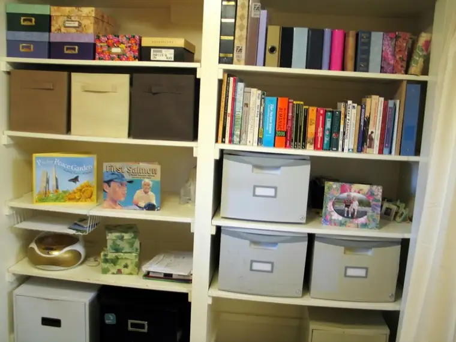

Last week, I introduced my new venture, Beauclair Communications, to Peace Garden Writer. Though it may seem as though it’s happened very quickly, most know that in reality, dreams can take a while to build. Now that I’m further along, I thought it might be helpful to share some of the more concrete steps I’ve taken to turn thoughts into reality.
Step 1: Reaching Out. Over the course of the last six months or so, I began networking, building on existing relationships that had the potential to turn into something more. I knew this would take time, but it was an exciting part of the process. Since I love discussing ideas with people, this did not feel like a chore at all, and it’s something I look forward to doing even more often in the coming months. Over time, those efforts have led to a firming-up of some relationships, resulting in working relationships. I’m pleased with, in fact in awe over, what’s unfolded to help convince me I’m heading in the right direction.
Step 2: Defining My Work/Building a Web Presence. This phase required a lot of thinking-things-through and mapping-out-ideas. I discussed in brief how this “went down” in last week’s post.
Step 3: Rethinking Space. Despite what has felt like a really great start, I knew that more had to happen for the vision to become reality. For one, I had to change my work space. Over the years, my “office” has been taken over by my children. With the addition of a laptop, it’s been easy for me to let this happen. In time, I realized I was not using my office for its intended purpose. And I knew that with the impending launch of Beauclair Communications, I needed to reclaim my working space, and do it in a way that would encourage comfortable yet diligent work habits. In the last couple weeks, my husband and I have worked to make this happen. We did some retouching of wall spots that had been damaged and re-organized my office area.
{kind=link}
{kind=link}
I also have a spot where I’ll work on my laptop, complete with coffee maker and mini-fridge.
{kind=link}
Though it might seem superfluous to have a coffee maker in both our kitchen and in my lower-level office, what I know is this: if I am to use my working hours well, it’s better that I keep business and home life separate. This is one way I can visually do this. I know for a fact that the minute I walk into my kitchen come fall, I’ll feel like I need to stay there and clean. Having a coffee maker downstairs is part of my plan to combat some of the obvious distractions that will tug at me in having an at-home office.
My office and our laundry room abut, so for the first time since I’ve occupied this space, I’ve introduced a simple separator that will allow me to block out other distractions. When the curtains are drawn, I’ll be in working mode and won’t be quite as accessible. When office hours end, the curtains will open again.
{kind=link}
It’s not a perfect setup. I’m sure there will be some revisions in the future. But for now, I’m feeling great about where all this is heading. I’m excited to produce quality work here, and to make this a place where dreams are realized.

{kind=link}
{kind=link}
This is a space where I feel I’ll be able to be productive. It’s a space that has a little something from my past and present, along with some helpful prompts for the future.

My worlds of faith, family and following the muse are all represented here, bringing many parts of the whole into one place.
{kind=link}
What space have you carved out for yourself where you feel productive, energetic and alive?